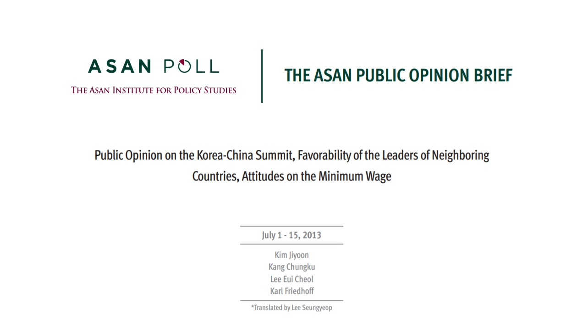

In this project, I identified problems with the existing legislation on the screening, examination process of North Korean refugees entering South Korea, and I propose changes to enhance due process and humanitarian approach within the procedure to the Presidentical Transition Committee.


In this project, I explained and wrote about the implications of South Korea's 2016 Legislative Election and provide outlook for the upcoming legislative session.

I have moderated and attended many high-level meetings with key stakeholders such as foreign emissaries, journalists, and lawmakers. I am capable of effectively articulating messages, information and ideas to a diversty of people, both in English and Korean.
I've editied and published over 5 volumes of a bi-monthly newsletter. I've proofread and restructured articles to optimize reader experiences, also fact-checked op-eds and ensure meeting deadlines for the production and distribution of the said newsletter.

I have proficiency in written English and have translated documents with various purposes and subjects.